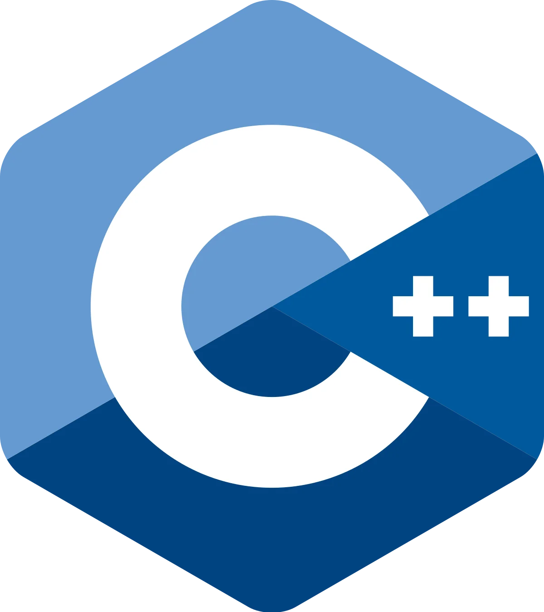
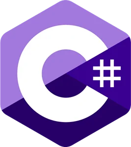

SKILLS
I'm fluent both in C/C++ and Java, but also have some good knowledge of C#, python and web languages like javascript (JQuery) or PHP. Apart from Unreal Engine 4,
I've already used Unity to make games, but also OpenGL, DirectX10 and lastly Vulkan.
Thanks to my curiosity and all the courses I had throughout my studies, I could oversee a lot of computer science fields (and master some of them), mainly Object-Oriented Programming, web development, databases, network, versioning (git, svn and Perforce) and even assemblers.
By joining Isart Digital Montréal, I had the opportunity to specialize in video games related development. From improving my skills in OOP and network, it taught me everything there is to know about core game development, animation programming, physics, memory management and 3D game engine programming (Vulkan), which is our final project graduation.
Thanks to my curiosity and all the courses I had throughout my studies, I could oversee a lot of computer science fields (and master some of them), mainly Object-Oriented Programming, web development, databases, network, versioning (git, svn and Perforce) and even assemblers.
By joining Isart Digital Montréal, I had the opportunity to specialize in video games related development. From improving my skills in OOP and network, it taught me everything there is to know about core game development, animation programming, physics, memory management and 3D game engine programming (Vulkan), which is our final project graduation.
Hard skills
- Fluent in C/C++ and Java.
- Always eager to work with Unreal Engine 4.
- Good knowledge of web development (full-stack experience on a large company-scale project
Soft skills
- I'm used to work in a team with both technical and non-technical people, as I already did several interdisciplinary game projects.
- Autonomous but also know when to ask for help
- Fluent in English (TOEIC score of 975), I'm always open minded about discovering foreign cultures and countries (Japan, Canada).

C++

C#

Java
Unreal

Unity
Visual